chase theorem about flat modules
1. Proposition
Let  be a commutative ring.
be a commutative ring.
TFAE:
- categorical products of flat modules are flat
- every finitely generated submodule of a free module is finitely presented
 is a coherent ring
is a coherent ring
2. Proof
2.1. 1)  2)
2)
by finitely generated submodule of a free module as submodule of a finitely generated free module we may assume w.l.o.g. that  is finite
is finite
It remains to show that the kernel of
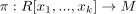
is a finitely generated submodule
For
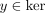
let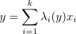
and set
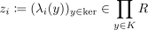
2.2. 2) 1)
Let
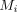
be flat modules and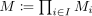
the product.2.2.1.  finitely generated modules
finitely generated modules
Let be a finitely generated moduel.
Then choose an module-epimorphism and the exact sequence.
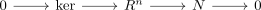
Then applying the tensor functor
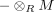
results in the exact sequencesand the commutative diagram
Note that  is Ab4 opp (cf.category RMod opp as AB4 category) and therefore the functor
is Ab4 opp (cf.category RMod opp as AB4 category) and therefore the functor
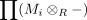
is exact as composition of exact functors
Then the middle morphism
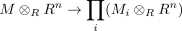
is an isomorphism (cf. tensor product with finitely generated free module commutes with limits)
Therefore
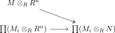
is an epimorphism and moreover
(cf. precomposition as epimorphism implies epimorphism)
Since
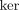
is also finitely generated, we conclude by similar reasoning that the map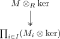
is also an epimorphism by setting
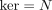
.using the 4-lemma for monos / Four-Lemma of modules of monomorphisms for
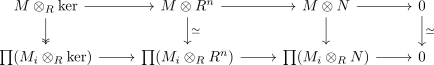
we conclude that the map
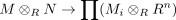
is a monomorphism and hence an isomorphism (cf. abelian category as balanced category)
Since
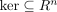
is a submodule of a free module, hence by assumption finitely presented, we may repeat this argument showing that the induced map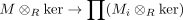
is an iso
Therefore the exact sequences
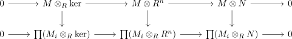
are isomorphic
Moreover this shows
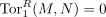
for every finitely presented module by similar reasoning to tor 1 as zero and tensor as exact
2.2.2. arbitrary
follows from module as filtered colimit of finitely presented modules and tor functor commutes with filtered colimits showing
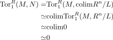